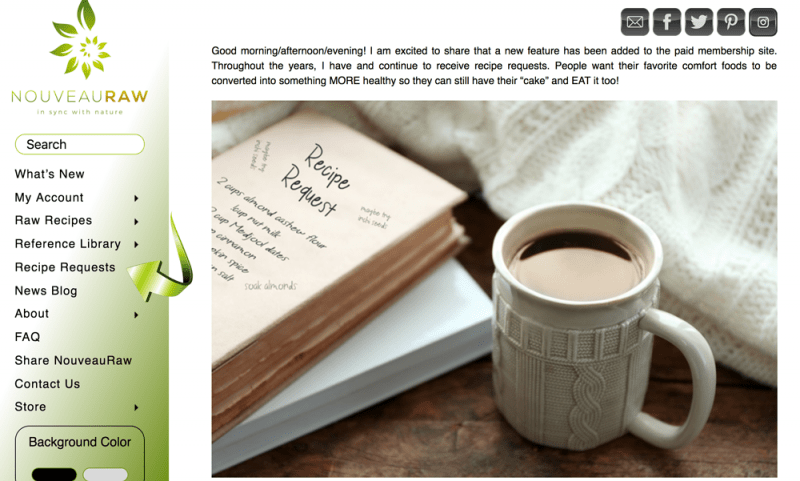

New Site Feature – Recipe Request Category
Good morning/afternoon/evening! I am excited to share that a new feature has been added to the paid membership site. Throughout the years, I have and continue to receive recipe requests. People want their favorite comfort foods to be converted into something MORE healthy so they can still have their “cake” and EAT it too!
I typically take on most requests because I love the challenge and I LOVE recreating a dish knowing that I have brought joy and excitement back into a families table. It’s not until now that I even thought of creating a form for people to fill out and creating a section that will house all the completed recipe requests. I now wish I had kept better track of them over the years as they are now tucked throughout the site. But I managed to remember some just off the top of my head, so I started to gather them in one location.
The Recipe Request Form
I created the form because in the past people would ask me to convert a recipe to raw but would never give me enough information. This lead to many conversations going back and forth. This form has all the important questions and facts that I will need to know in order to move forward. Once submitted I look it over and get back in touch with you.
I will be upfront in stating that I may not take all recipe requests. Some recipes just don’t covert well, and I would have to veer so far off the path that the end flavor and texture would end up being something different. Also, I may have ingredient restraints, but I will give it my best.
NEW Recipe Request Category
As a member, this category can be found by selecting “Recipe Requests” on the left-side menu bar when logged in. The purpose for creating a specific section for completed recipe requests is so that you can readily view them for inspiration… to show you what can be done and how! When I do these requests, I use these recipes as a teaching tool. I want people to understand how I came to the decision of using particular ingredients, how they work in the raw recipe, and what to expect. This will help you further on down the road when you attempt to recreate a recipe.
I also want to mention that these recipes are meant for personal use only and will remain the property of Nouveuaraw.com. If you are looking for a recipe to take to market (manufacturer), please let me know because that’s a whole new ball game. Check out the new section (here).

I hope you enjoy this new section. Please leave a comment below and let me know what you think! blessings, amie sue
© AmieSue.com